uAdmin Settings¶
Back to Settings in System Reference
Here are all build-in uAdmin Settings, their format, and how to use them in the project.
Allowed IPs¶
Allowed IPs is a list of allowed IPs to access uAdmin interface in one of the following formats:
“*” = Allow all
“” = Allow none
“192.168.1.1” = Only allow this IP
“192.168.1.0/24” = Allow all IPs from 192.168.1.1 to 192.168.1.254
You can also create a list of the above formats using comma to separate them.
For example: “192.168.1.1, 192.168.1.2, 192.168.0.0/24”
Default Value: *
Data Type: String
Code: uAdmin.AllowedIPs
Run your application and login your account. From uAdmin dashboard, click the wrench icon located on the top right.

In the Settings, assign your IP address connected on your PC in the AllowedIPs function.

Now link the host to your IP and see what happens.

API Disabled Add¶
API Disabled Add controls the data API’s disabled for add commands.
Default Value: 0
Data Type: Boolean
Code: uAdmin.APIDisabledAdd
API Disabled Delete¶
API Disabled Delete controls the data API’s disabled for delete commands.
Default Value: 0
Data Type: Boolean
Code: uAdmin.APIDisabledDelete
API Disabled Edit¶
API Disabled Edit controls the data API’s disabled for edit commands.
Default Value: 0
Data Type: Boolean
Code: uAdmin.APIDisabledEdit
API Disabled Read¶
API Disabled Read controls the data API’s disabled for read commands.
Default Value: 0
Data Type: Boolean
Code: uAdmin.APIDisabledRead
API Disabled Schema¶
API Disabled Schema controls the data API’s disabled for schema commands.
Default Value: 0
Data Type: Boolean
Code: uAdmin.APIDisabledSchema
API Log Add¶
API Log Add controls the data API’s logging for add commands.
Default Value: 1
Data Type: Boolean
Code: uAdmin.APILogAdd
Prerequisites:
Run your application and login your account. From uAdmin dashboard, click the wrench icon located on the top right.
In the Settings, enable the APILogAdd then click Save button on the bottom right corner.

Now let’s call this URL in the address bar to add multiple records in the Document model with the following information below:
First Record
Name: Golang
Author: John
Second Record
Name: uAdmin
Author: Adam
# document is a model name
# name and author are field names
# __0 is the first index
# __1 is the second index
http://api.example.com/api/d/document/add/?_name__0=Golang&_author__0=John&_name__1=uAdmin&_author__1=Adam
Result:
{
"id": [
1,
2
],
"rows_count": 2,
"status": "ok"
}
It returns an array with a list of IDs for the newly created records.
Now go back to the uAdmin dashboard.

From here, click on “LOGS”.
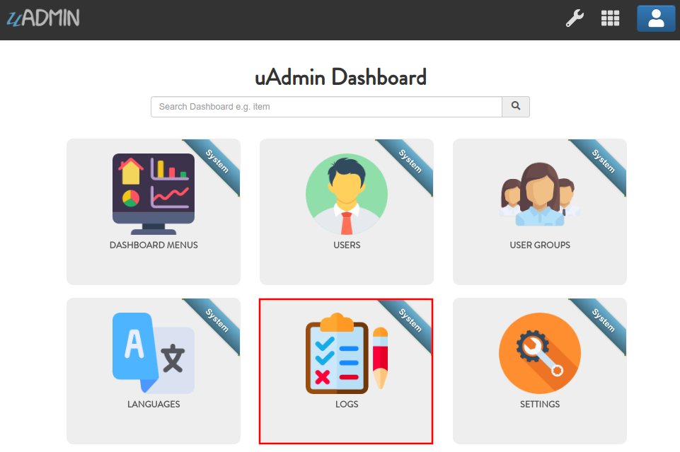As expected, the user’s action in adding records through HTTP API was recorded in the Log model.

Now let’s try disabling the API Log Add in the Settings.

Let’s call this URL to add a new record in the Document model with the following information below:
Name: Programming
Author: Admin
# document is a model name
# name and author are field names
http://api.example.com/api/d/document/add/?_name=Programming&_author=Admin
Result:
{
"id": 3,
"rows_count": 1,
"status": "ok"
}
It returns the ID of the newly created record.
Check the “LOGS” to see the result.
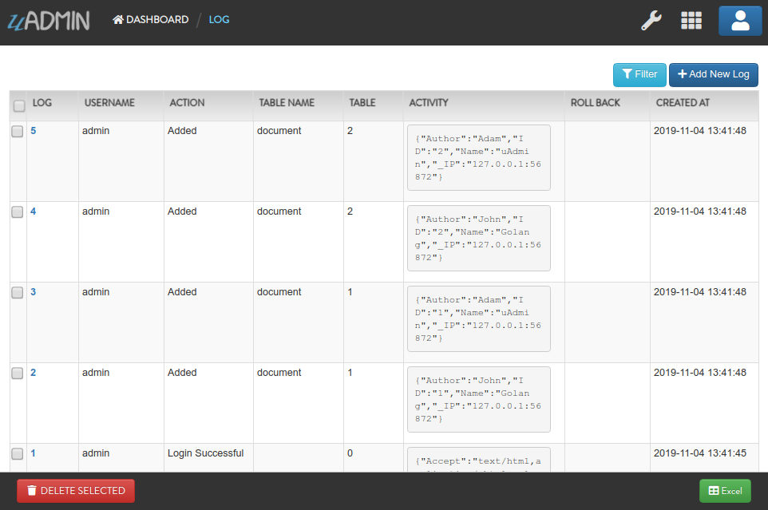As expected, the user’s action in adding a record through HTTP API was not recorded in the Log model.
API Log Delete¶
API Log Delete controls the data API’s logging for delete commands.
Default Value: 1
Data Type: Boolean
Code: uAdmin.APILogDelete
Prerequisites:
Run your application and login your account. From uAdmin dashboard, click the wrench icon located on the top right.
In the Settings, enable the APILogDelete then click Save button on the bottom right corner.
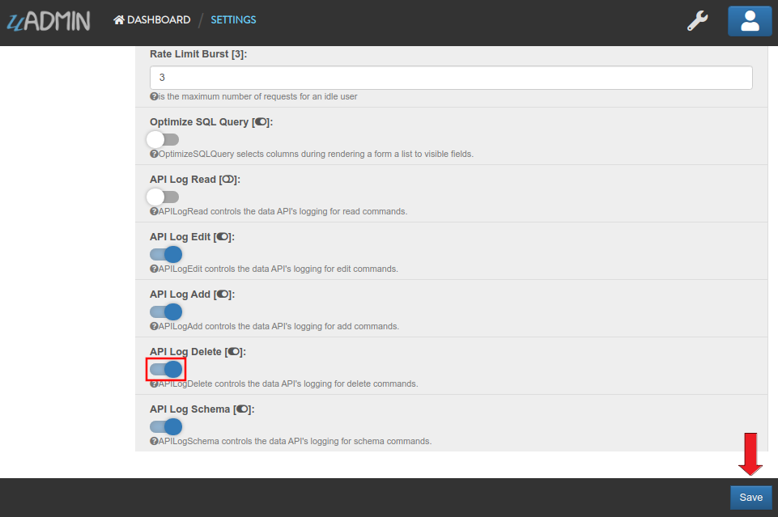Suppose you have five records in the Item model.

Call this URL in the address bar to delete records where the name of an item contains “iPad”.
# item is a model name
# name is a field name
# __contains is an operator that will search for string values that contract
http://api.example.com/api/d/item/delete/?name__contains=iPad
Result:
{
"rows_count": 2,
"status": "ok",
}
It returns the status and the rows affected by your query.
Now go back to the uAdmin dashboard.
From here, click on “LOGS”.
As expected, the user’s action in deleting records through HTTP API that contains “iPad” in the item name was recorded in the Log model.

Now let’s try disabling the API Log Delete in the Settings.
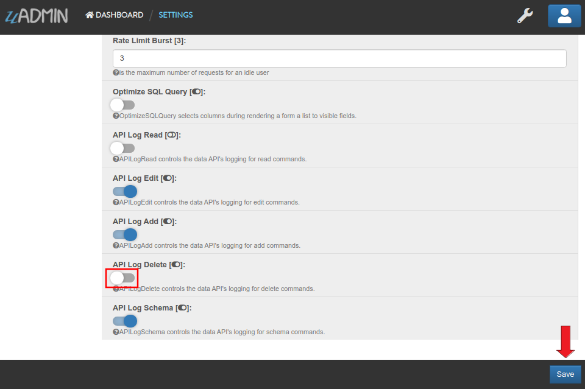Let’s call this URL in the address bar to delete the fourth record in the database.
# item is a model name
# 4 is an ID number
http://api.example.com/api/d/item/delete/4/
Result:
{
"rows_count": 1,
"status": "ok"
}
It returns the status and the rows affected by your query.
Check the “LOGS” to see the result.
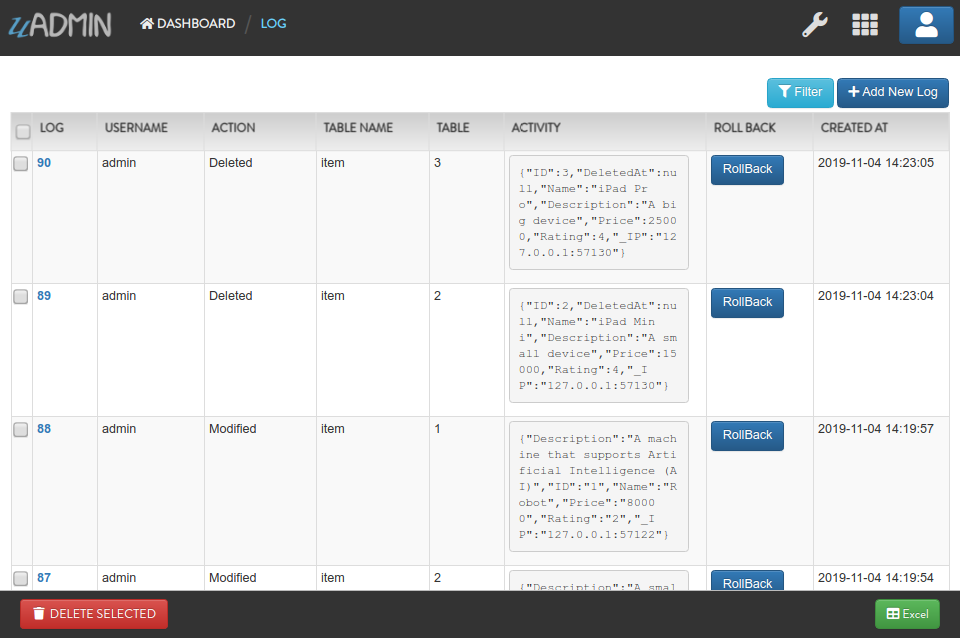As expected, the user’s action in deleting the fourth record through HTTP API was not recorded in the Log model.
API Log Edit¶
API Log Edit controls the data API’s logging for edit commands.
Default Value: 1
Data Type: Boolean
Code: uAdmin.APILogEdit
Prerequisites:
Run your application and login your account. From uAdmin dashboard, click the wrench icon located on the top right.
In the Settings, enable the APILogEdit then click Save button on the bottom right corner.

Suppose you have five records in the Item model where all iPad items have a rating of 4.
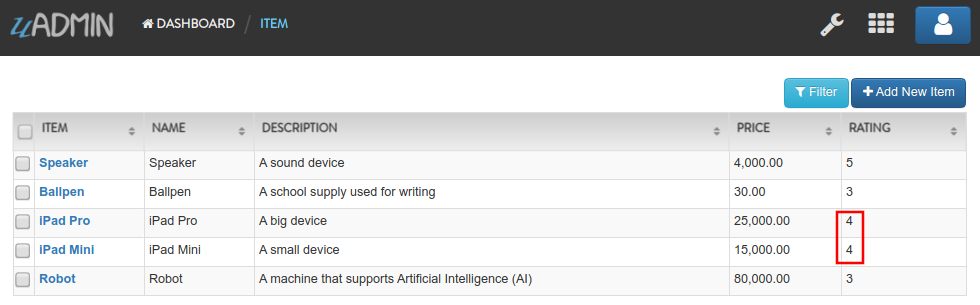Call this URL to edit the rating of all iPad items to a value of 5.
# item is a model name
# name is a field name
# __contains is an operator that will search for string values that contract
# rating=4&_rating=5 means that where rating is equal to 4, change the
# rating value to 5
http://api.example.com/api/d/item/edit/?rating=4&_rating=5
Result:
{
"rows_count": 2,
"status": "ok"
}
It returns the status and the rows affected by your query.
Now go back to the uAdmin dashboard.
From here, click on “LOGS”.
As expected, the user’s action in editing records through HTTP API was recorded in the Log model.
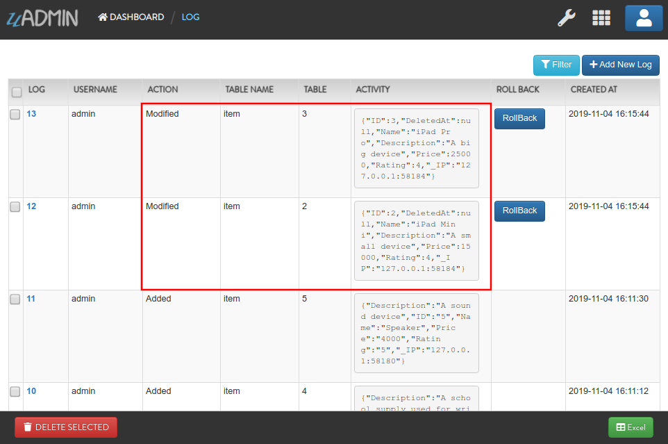Now let’s try disabling the API Log Edit in the Settings.
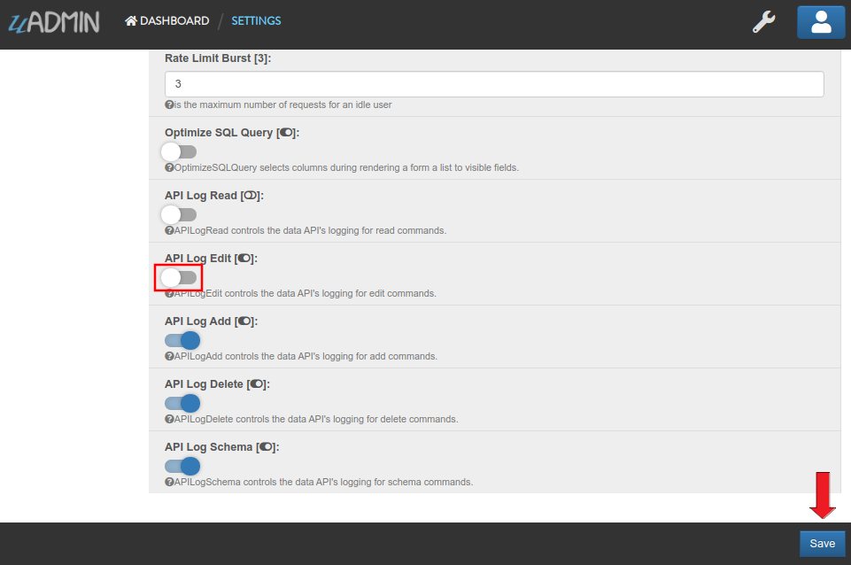Suppose the first record in the Item model is named as “Robot”.
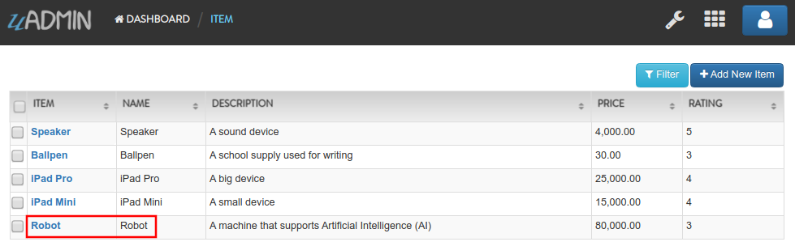Call this URL to edit the name of the first record in the database from “Robot” to “Supercomputer”.
# item is a model name
# 1 is an ID number
# name is a field name
http://api.example.com/api/d/item/edit/1/?_name=Supercomputer
Result:
{
"rows_count": 1,
"status": "ok"
}
It returns the status and the rows affected by your query.
Check the “LOGS” to see the result.

As expected, the user’s action in editing the first record through HTTP API was not recorded in the Log model.
API Log Read¶
API Log Read controls the data API’s logging for read commands.
Default Value: 0
Data Type: Boolean
Code: uAdmin.APILogRead
Prerequisites:
Run your application and login your account. From uAdmin dashboard, click the wrench icon located on the top right.
In the Settings, enable the APILogRead then click Save button on the bottom right corner.

Suppose you have five records in the Item model.
Call this URL to read record(s) where rating is equal to 3.
# item is a model name
# rating is a field name
http://api.example.com/api/d/item/read/?rating=3
Result:
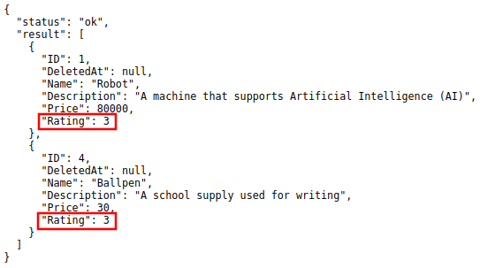It returns a list of records where rating is equal to 3.
Now go back to the uAdmin dashboard.
From here, click on “LOGS”.
As expected, the user’s action in reading records through HTTP API was recorded in the Log model.
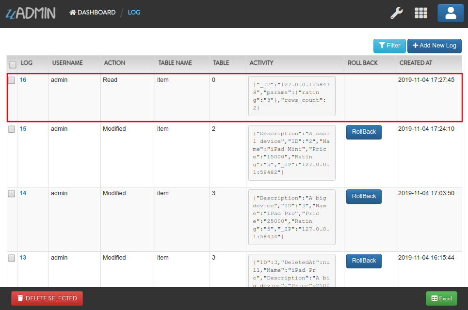Now let’s try disabling the API Log Read in the Settings.

Call this URL to read the second record in the Item model.
# item is a model name
# 2 is an ID number
http://api.example.com/api/d/item/read/2/
Result:

It returns a JSON object representing an item where ID=2.
Check the “LOGS” to see the result.
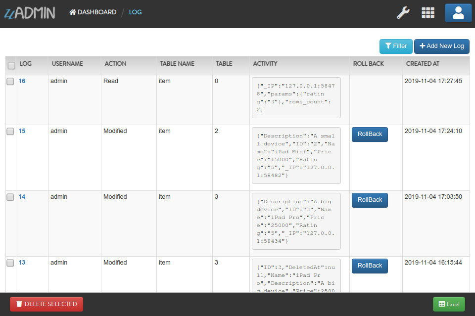As expected, the user’s action in reading the second record through HTTP API was not recorded in the Log model.
API Log Schema¶
API Log Schema controls the data API’s logging for schema commands.
Default Value: 1
Data Type: Boolean
Code: uAdmin.APILogSchema
Prerequisite:
Run your application and login your account. From uAdmin dashboard, click the wrench icon located on the top right.
In the Settings, enable the APILogSchema then click Save button on the bottom right corner.

Suppose you have five records in the Item model.
Call this URL to read the full schema of the Item model.
# item is a model name
http://api.example.com/api/d/item/schema/
Result:
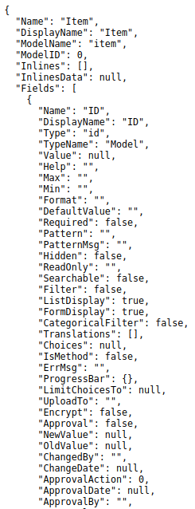It returns a JSON object representing uAdmin’s ModelSchema of the Item model.
Now go back to the uAdmin dashboard.
From here, click on “LOGS”.
As expected, the user’s action in getting the schema of the Item model through HTTP API was recorded in the Log model.
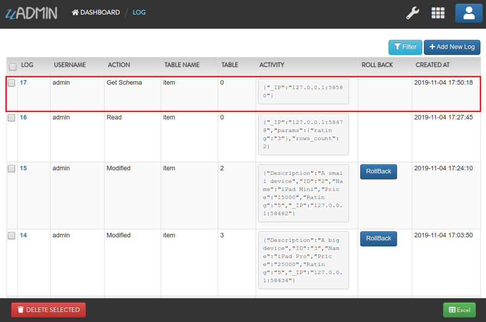Now let’s try disabling the API Log Schema in the Settings.
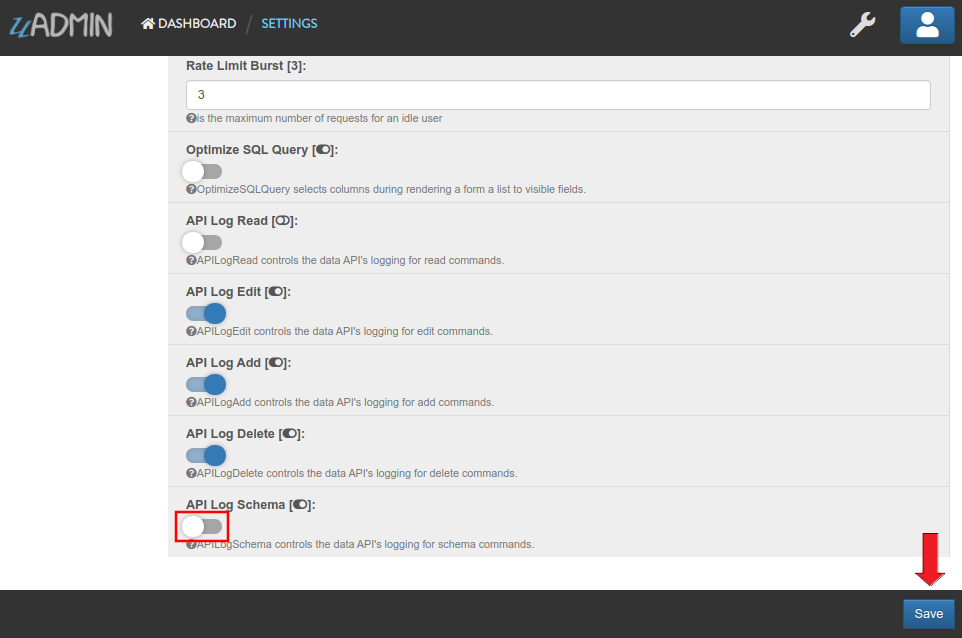Recall this URL to read the full schema of the Item model.
# item is a model name
http://api.example.com/api/d/item/schema/
Check the “LOGS” to see the result.
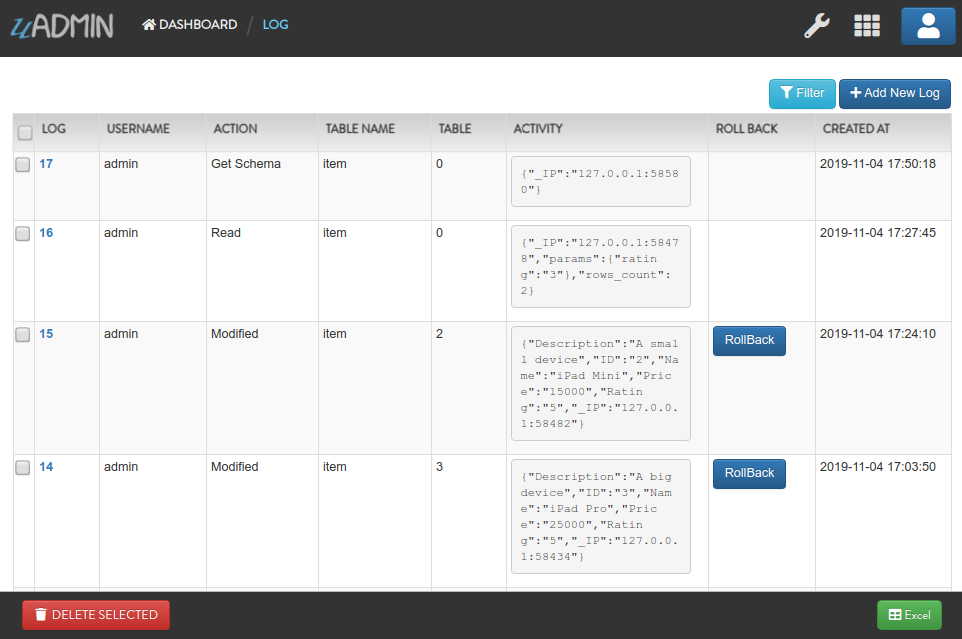As expected, the user’s action in getting the schema of the Item model through HTTP API was not recorded in the Log model.
API Post Query Add¶
API Post Query Add controls the data API’s post query for add commands.
Default Value: 0
Data Type: Boolean
Code: uAdmin.APIPostQueryAdd
API Post Query Delete¶
API Post Query Delete controls the data API’s post query for delete commands.
Default Value: 0
Data Type: Boolean
API Post Query Edit¶
API Post Query Edit controls the data API’s post query for edit commands.
Default Value: 0
Data Type: Boolean
Code: uAdmin.APIPostQueryEdit
API Post Query Read¶
API Post Query Read controls the data API’s post query for read commands.
Default Value: 0
Data Type: Boolean
Code: uAdmin.APIPostQueryRead
API Post Query Schema¶
API Post Query Schema controls the data API’s post query for schema commands.
Default Value: 0
Data Type: Boolean
API Pre Query Add¶
API Pre Query Add controls the data API’s pre query for add commands.
Default Value: 0
Data Type: Boolean
Code: uAdmin.APIPreQueryAdd
API Pre Query Delete¶
API Pre Query Delete controls the data API’s pre query for delete commands.
Default Value: 0
Data Type: Boolean
Code: uAdmin.APIPreQueryDelete
API Pre Query Edit¶
API Pre Query Edit controls the data API’s pre query for edit commands.
Default Value: 0
Data Type: Boolean
Code: uAdmin.APIPreQueryEdit
API Pre Query Read¶
API Pre Query Read controls the data API’s pre query for read commands.
Default Value: 0
Data Type: Boolean
Code: uAdmin.APIPreQueryRead
API Pre Query Schema¶
API Pre Query Schema controls the data API’s pre query for schema commands.
Default Value: 0
Data Type: Boolean
Code: uAdmin.APIPreQuerySchema
API Public Add¶
API Public Add controls the data API’s public for add commands.
Default Value: 0
Data Type: Boolean
Code: uAdmin.APIPublicAdd
API Public Delete¶
API Public Delete controls the data API’s public for delete commands.
Default Value: 0
Data Type: Boolean
Code: uAdmin.APIPublicDelete
API Public Edit¶
API Public Edit controls the data API’s public for edit commands.
Default Value: 0
Data Type: Boolean
Code: uAdmin.APIPublicEdit
API Public Read¶
API Public Read controls the data API’s public for read commands.
Default Value: 0
Data Type: Boolean
Code: uAdmin.APIPublicRead
API Public Schema¶
API Public Schema controls the data API’s public for schema commands.
Default Value: 0
Data Type: Boolean
Code: uAdmin.APIPublicSchema
Blocked IPs¶
BlockedIPs is a list of blocked IPs from accessing uAdmin interface in one of the following formats:
“*” = Block all
“” = Block none
“192.168.1.1” = Only block this IP
“192.168.1.0/24” = Block all IPs from 192.168.1.1 to 192.168.1.254
You can also create a list of the above formats using comma to separate them.
For example: “192.168.1.1, 192.168.1.2, 192.168.0.0/24”
Default Value: “”
Data Type: String
Code: uAdmin.BlockedIPs
Run your application and login your account. From uAdmin dashboard, click the wrench icon located on the top right.
In the Settings, assign your IP address connected on your PC in the BlockedIPs function.

Now link the host to your IP and see what happens.

Quiz:
Cache Permissions¶
Cache Permissions allows uAdmin to store permissions data in memory.
Default Value: 1
Data Type: Boolean
Code: uAdmin.CachePermissions
Cache Sessions¶
Cache Sessions allows uAdmin to store sessions data in memory.
Default Value: 1
Data Type: Boolean
Code: uAdmin.CacheSessions
Cache Translation¶
Cache Translation allows a translation to store data in a cache memory.
Default Value: 0
Data Type: Boolean
Code: uAdmin.CacheTranslation
Enable
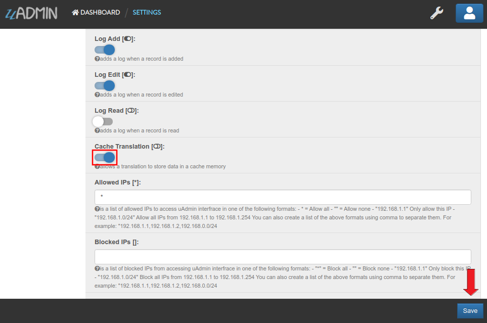Disable

DebugDB¶
Debug DB prints all SQL statements going to DB.
Default Value: 0
Data Type: Boolean
Code: uAdmin.DebugDB
Run your application and login your account. From uAdmin dashboard, click the wrench icon located on the top right.
In the Settings, enable the Debug DB then click Save button on the bottom right corner.
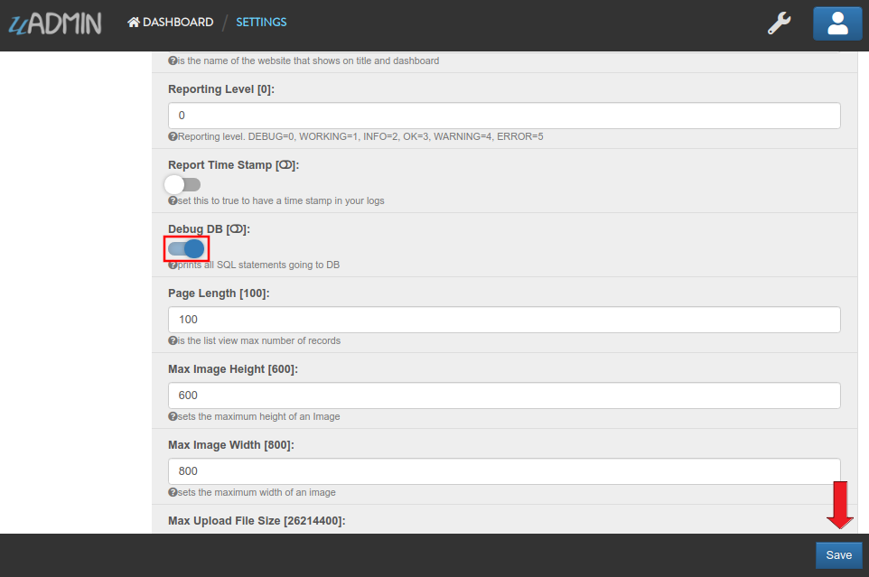Check your terminal to see the result.
(/home/dev1/go/src/github.com/uadmin/uadmin/db.go:246)
[2019-11-05 15:44:45] [0.51ms] SELECT * FROM "languages" WHERE "languages"."deleted_at" IS NULL AND ((code='en')) ORDER BY "languages"."id" ASC LIMIT 1
[1 rows affected or returned ]
(/home/dev1/go/src/github.com/uadmin/uadmin/db.go:158)
[2019-11-05 15:44:45] [0.20ms] SELECT * FROM "setting_categories" WHERE "setting_categories"."deleted_at" IS NULL
[1 rows affected or returned ]
(/home/dev1/go/src/github.com/uadmin/uadmin/db.go:436)
[2019-11-05 15:44:45] [1.56ms] SELECT * FROM "settings" WHERE "settings"."deleted_at" IS NULL AND ((category_id = 1))
[38 rows affected or returned ]
(/home/dev1/go/src/github.com/uadmin/uadmin/db.go:436)
[2019-11-05 15:44:55] [0.35ms] SELECT * FROM "ab_tests" WHERE "ab_tests"."deleted_at" IS NULL AND ((active = true))
[0 rows affected or returned ]
Quiz:
Email From¶
Email From identifies where the email is coming from.
Default Value: “”
Data Type: String
Code: uAdmin.EmailFrom
Run your application and login your account. From uAdmin dashboard, click the wrench icon located on the top right.
In the Settings, assign the following email configurations.
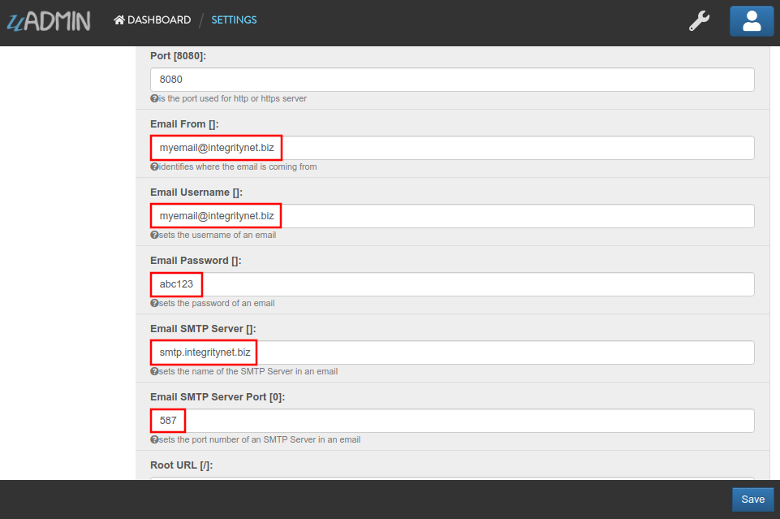Let’s go back to the uAdmin dashboard, go to Users model, create your own user account and set the email address based on your assigned EmailFrom in the code above.

Log out your account. At the moment, you suddenly forgot your password. How can we retrieve our account? Click Forgot Password at the bottom of the login form.

Input your email address based on the user account you wish to retrieve it back.

Once you are done, open your email account. You will receive a password reset notification from the Todo List support. To reset your password, click the link highlighted below.

You will be greeted by the reset password form. Input the following information in order to create a new password for you.

Once you are done, you can now access your account using your new password.
Quiz:
Email Password¶
Email Password sets the password of an email.
Default Value: “”
Data Type: String
Code: uAdmin.EmailPassword
See Email From for the example.
Email SMTP Server¶
Email SMTP Server sets the name of the SMTP Server in an email.
Default Value: “”
Data Type: String
Code: uAdmin.EmailSMTPServer
See Email From for the example.
Email SMTP Server Port¶
Email SMTP Server Port sets the port number of an SMTP Server in an email.
Default Value: 0
Data Type: Integer
See Email From for the example.
Email Username¶
Email Username sets the username of an email.
Default Value: “”
Data Type: String
Code: uAdmin.EmailUsername
See Email From for the example.
HTTP Log Format¶
HTTP Log Format is the format used to log HTTP access.
Default Value: %a %>s %B %U %D
Data Type: String
Code: uAdmin.HTTPLogFormat
Format:
%a: Client IP address
%{remote}p: Client port
%A: Server hostname/IP
%{local}p: Server port
%U: Path
%c: All coockies
%{NAME}c: Cookie named 'NAME'
%{GET}f: GET request parameters
%{POST}f: POST request parameters
%B: Response length
%>s: Response code
%D: Time taken in microseconds
%T: Time taken in seconds
%I: Request length
Log Add¶
Log Add adds a log when a record is added.
Default Value: 1
Data Type: Boolean
Code: uAdmin.LogAdd
Run your application and login your account. From uAdmin dashboard, click the wrench icon located on the top right.
In the Settings, enable the Log Add then click Save button on the bottom right corner.
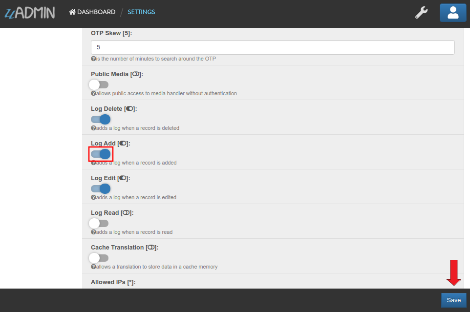Now go back to the uAdmin dashboard.
From here, click on “LOGS”.
Suppose that you have this record in your logs as shown below:

Go back to uAdmin dashboard then select “TODOS”.

Click “Add New Todo”.

Input the name value in the text box (e.g. Read a book). Click Save button afterwards.

Result

Now go back to the “LOGS” to see the result.

Now let’s try disabling the Log Add in the Settings.
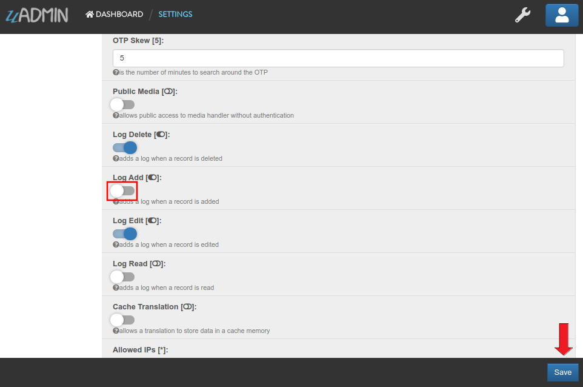Go back to the uAdmin dashboard. Click on “TODOS” model and add another data inside it.

Result

Now go back to the “LOGS” to see the result.

As you can see, the log content remains the same. Well done!
See Log Read for the continuation.
Log Delete¶
Log Delete adds a log when a record is deleted.
Default Value: 1
Data Type: Boolean
Code: uAdmin.LogDelete
Before you proceed to this example, see Log Edit.
Run your application and login your account. From uAdmin dashboard, click the wrench icon located on the top right.
In the Settings, enable the Log Delete then click Save button on the bottom right corner.

Now go back to the uAdmin dashboard.
From here, click on “LOGS”.
Suppose that you have this record in your logs as shown below:

Go back to uAdmin dashboard then select “TODOS”.
Select any of your existing data that you wish to delete (e.g. Washing the dishes)

Now go back to the “LOGS” to see the result.

Now let’s try disabling the Log Delete in the Settings.

Go back to the uAdmin dashboard. Click on “TODOS” model and delete the remaining data (e.g. Read a book).

Now go back to the “LOGS” to see the result.

As you can see, the log content remains the same. Well done!
Quiz:
Log Edit¶
Log Edit adds a log when a record is edited.
Default Value: 1
Data Type: Boolean
Code: uAdmin.LogEdit
Before you proceed to this example, see Log Read.
Run your application and login your account. From uAdmin dashboard, click the wrench icon located on the top right.
In the Settings, enable the Log Edit then click Save button on the bottom right corner.
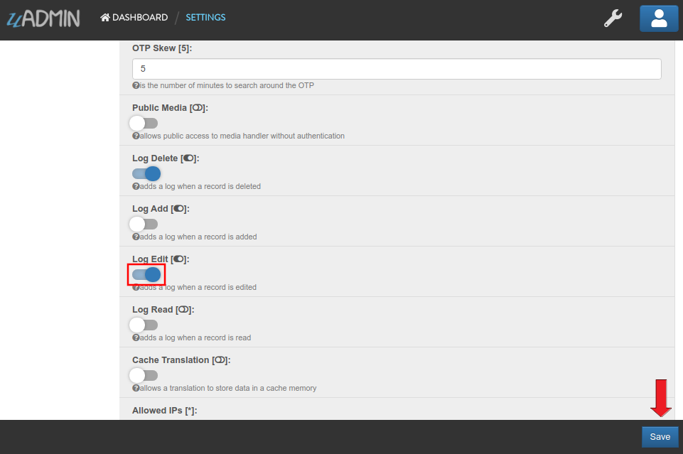Now go back to the uAdmin dashboard.
From here, click on “LOGS”.
Suppose that you have this record in your logs as shown below:

Go back to uAdmin dashboard then select “TODOS”.
Select any of your existing data (e.g. Build a robot)

Change it to “Assembling the CPU” for instance.

Result

Now go back to the “LOGS” to see the result.

Now let’s try disabling the Log Edit in the Settings.
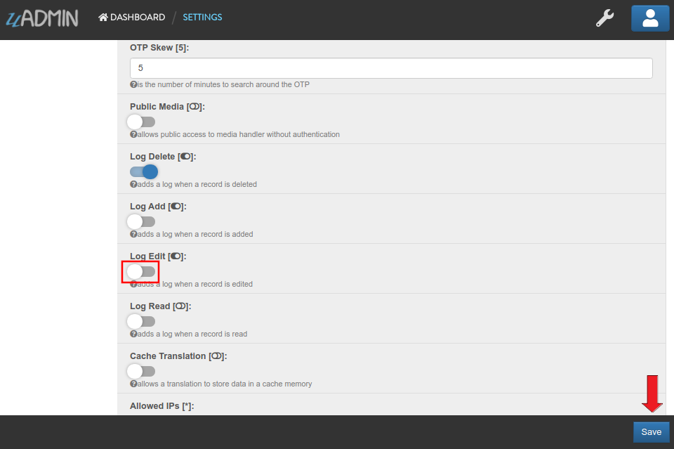Go back to the uAdmin dashboard. Click on “TODOS” model and modify any of your existing data (e.g. Assembling the CPU).
Change it to “Washing the dishes” for instance.

Result

Now go back to the “LOGS” to see the result.
As you can see, the log content remains the same. Well done!
See Log Delete for the continuation.
Log HTTP Requests¶
Logs http requests to syslog
Default Value: 1
Data Type: Boolean
Code: uAdmin.LogHTTPRequests
Log Read¶
Log Read adds a log when a record is read.
Default Value: 0
Data Type: Boolean
Code: uAdmin.LogRead
Before you proceed to this example, see Log Add.
Run your application and login your account. From uAdmin dashboard, click the wrench icon located on the top right.
In the Settings, enable the Log Read then click Save button on the bottom right corner.
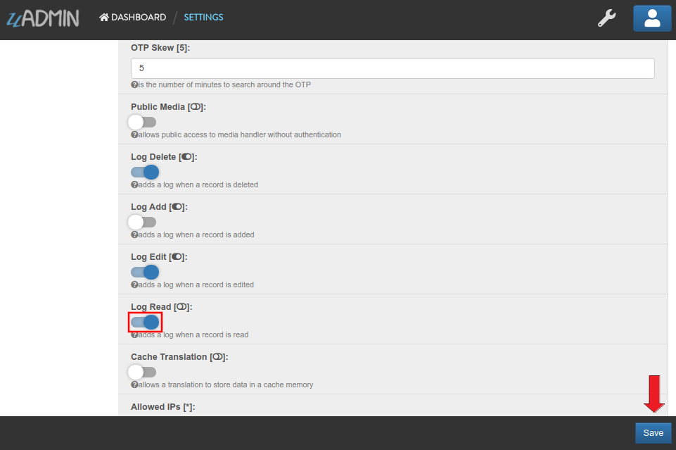Now go back to the uAdmin dashboard.
From here, click on “LOGS”.
Suppose that you have this record in your logs as shown below:
Go back to uAdmin dashboard then select “TODOS”.
Select any of your existing data.
Result
Now go back to the “LOGS” to see the result.

Now let’s try disabling the Log Read in the Settings.
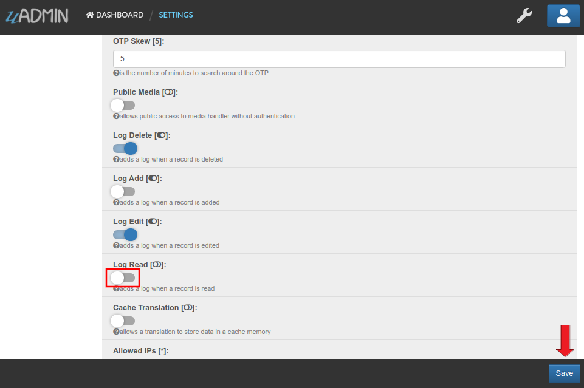Go back to the uAdmin dashboard. Click on “TODOS” model and add select any of your existing data.
Result
Now go back to the “LOGS” to see the result.
As you can see, the log content remains the same. Well done!
See Log Edit for the continuation.
Log Trail¶
Log Trail stores Trail logs to syslog.
Default Value: 0
Data Type: Boolean
Code: uAdmin.LogTrail
Max Image Width¶
Max Image Width sets the maximum width of an image.
Default Value: 800
Data Type: Integer
Code: uAdmin.MaxImageWidth
Run your application and login your account. From uAdmin dashboard, click the wrench icon located on the top right.
In the Settings, set the Max Image Width to 360 pixels and the Max Image Height to 240 pixels. Click Save on the bottom right corner afterwards.

uAdmin has a feature that allows you to customize your own profile. In order to do that, click the profile icon on the top right corner then select admin as highlighted below.

By default, there is no profile photo inserted on the top left corner. If you want to add it in your profile, click the Choose File button to browse the image on your computer.

Let’s pick a photo that surpasses the MaxImageWidth and MaxImageHeight values.

Once you are done, click Save Changes on the left corner and refresh the webpage to see the output.

As expected, the profile pic will be uploaded to the user profile that automatically resizes to 360x240 pixels.
Quiz:
Max Image Height¶
Max Image Height sets the maximum height of an image.
Default Value: 600
Data Type: Integer
Code: uAdmin.MaxImageHeight
See Max Image Width for the example.
Max Upload File Size¶
Max Upload File Size is the maximum upload file size in bytes.
1MB = 1024 * 1024
Default Value: 26214400
Data Type: Integer
Code: uAdmin.MaxUploadFileSize
Run your application and login your account. From uAdmin dashboard, click the wrench icon located on the top right.
In the Settings, set the Max Upload File Size value to 1 MB. It is 1 multiplied by 1024 (Kilobytes) multiplied by 1024 (Bytes) = 1048576 Bytes.

Now go to your profile and upload an image that exceeds the Max Upload File Size limit. If you click Save changes…

The profile picture has failed to upload in the user profile because the file size is larger than the limit.
Quiz:
Optimize SQL Query¶
Optimize SQL Query selects columns during rendering a form a list to visible fields.
Default Value: 1
Data Type: Boolean
Code: uAdmin.OptimizeSQLQuery
Enable

Disable
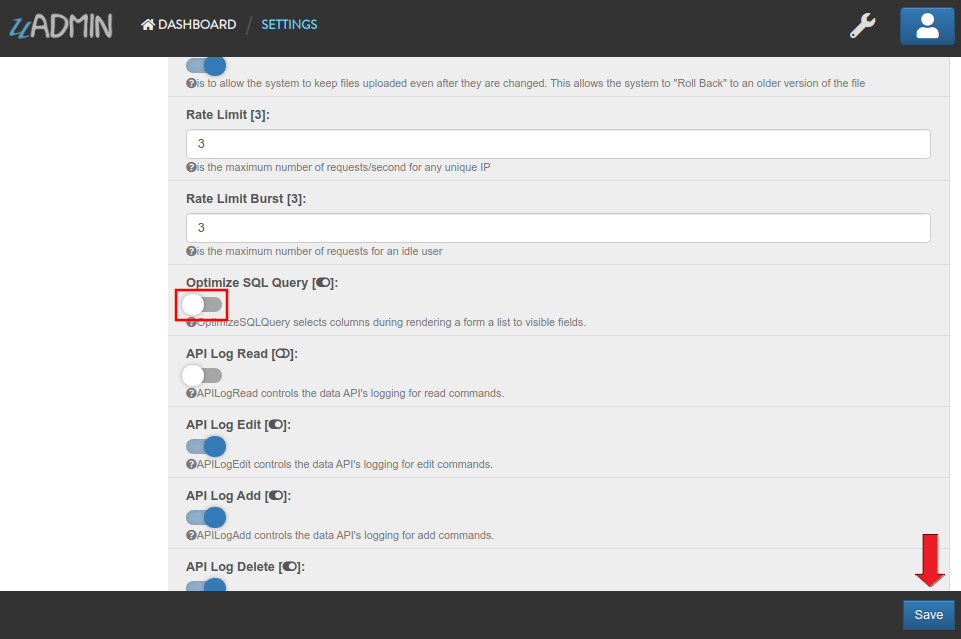OTP Algorithm¶
OTP Algorithm is the hashing algorithm of OTP. Other options are sha256 and sha512.
Default Value: sha1
Data Type: String
Code: uAdmin.OTPAlgorithm
You can apply any of these in Settings.
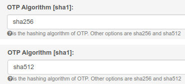OTP Digits¶
OTP Digits is the number of digits for the OTP.
Default Value: 6
Data Type: Integer
Code: uAdmin.OTPDigits
Run your application and login your account. From uAdmin dashboard, click the wrench icon located on the top right.
In the Settings, set the OTP Digits value to 8. Click Save button on the bottom right corner afterwards.

Make sure that OTP Required on the account you are using is enabled in the User model.

Logout your account, relogin your account, and check your terminal afterwards to see the OTP verification code assigned by your system.
[ INFO ] User: admin OTP: 90401068
As shown above, it has 8 OTP digits.
Quiz:
OTP Period¶
OTP Period is the number of seconds for the OTP to change.
Default Value: 30
Data Type: Integer
Code: uAdmin.OTPPeriod
Run your application and login your account. From uAdmin dashboard, click the wrench icon located on the top right.
In the Settings, set the OTP Period to 10 seconds. Click Save button on the bottom right corner afterwards.
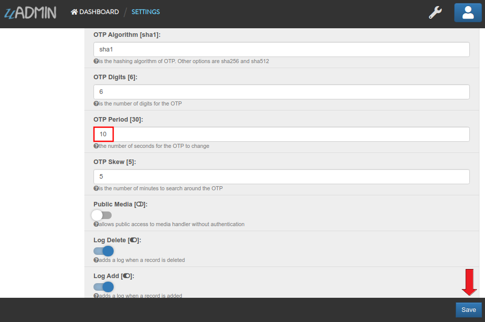Make sure that OTP Required on the account you are using is enabled in the User model.
Logout your account, relogin your account, and check your terminal afterwards to see how the OTP code changes every 10 seconds by refreshing your browser.
// Before refreshing your browser
[ INFO ] User: admin OTP: 433452
// After refreshing your browser in more than 10 seconds
[ INFO ] User: admin OTP: 185157
Quiz:
OTP Skew¶
OTP Skew is the number of minutes to search around the OTP.
Default Value: 5
Data Type: Integer
Code: uAdmin.OTPSkew
Run your application and login your account. From uAdmin dashboard, click the wrench icon located on the top right.
In the Settings, set the OTP Skew value to 2 minutes. Click Save button on the bottom right corner afterwards.
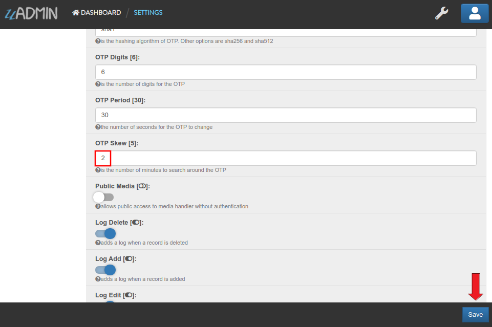Make sure that OTP Required on the account you are using is enabled in the User model.
Logout your account, relogin your account, and check your terminal afterwards to see the OTP verification code assigned by your system. Wait for more than two minutes and check if the OTP code is still valid.
After waiting for more than two minutes,

It redirects to the same webpage which means your OTP code is no longer valid.
Quiz:
Page Length¶
Page Length is the list view max number of records.
Default Value: 100
Data Type: Integer
Code: uAdmin.PageLength
Run your application and login your account. From uAdmin dashboard, click the wrench icon located on the top right.
In the Settings, assign the Page Length value to 4.
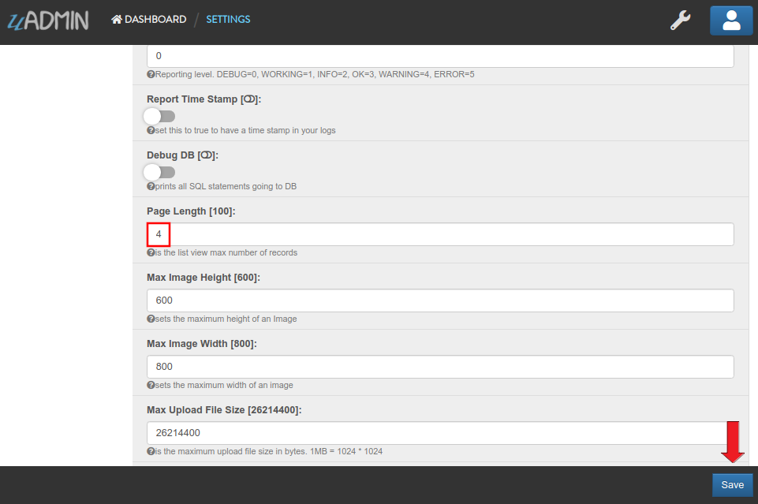Go to the Item model. Inside it you have 6 total elements. The elements in the item model will display 4 elements per page.

Quiz:
Port¶
Port is the port used for http or https server.
Default Value: 8080
Data Type: Integer
Code: uAdmin.Port
Run your application and login your account. From uAdmin dashboard, click the wrench icon located on the top right.
In the Settings, apply 8000 as a port number. Click Save button on the bottom right corner afterwards.

Rebuild your application. Check your terminal to see the result.
[ OK ] Initializing DB: [13/13]
[ OK ] Synching System Settings: [46/46]
[ OK ] Server Started: http://0.0.0.0:8000
___ __ _
__ __/ | ____/ /___ ___ (_)___
/ / / / /| |/ __ / __ __ \/ / __ \
/ /_/ / ___ / /_/ / / / / / / / / / /
\__,_/_/ |_\__,_/_/ /_/ /_/_/_/ /_/
In the Server Started, it will redirect you to port number 8000.
Quiz:
Public Media¶
Public Media allows public access to media handler without authentication.
Default Value: 0
Data Type: Boolean
Code: uAdmin.PublicMedia
For instance, my account was not signed in.

And you want to access travel.png inside your media folder.

Run your application and login your account. From uAdmin dashboard, click the wrench icon located on the top right.
In the Settings, enable the Public Media then click Save button on the bottom right corner.

Logout your account. Access the image path in the URL to see the result.

Quiz:
Rate Limit¶
Rate Limit is the maximum number of requests/second for any unique IP.
Default Value: 3
Data Type: Integer
Code: uAdmin.RateLimit
Run your application and login your account. From uAdmin dashboard, click the wrench icon located on the top right.
In the Settings, assign the rate limit to 1. Click Save button on the bottom right corner afterwards.
Now go back to the uAdmin dashboard.
From here, hold the Ctrl Key on your keyboard then click any dashboard menu in the form really fast to add in a new tab and see what happens.
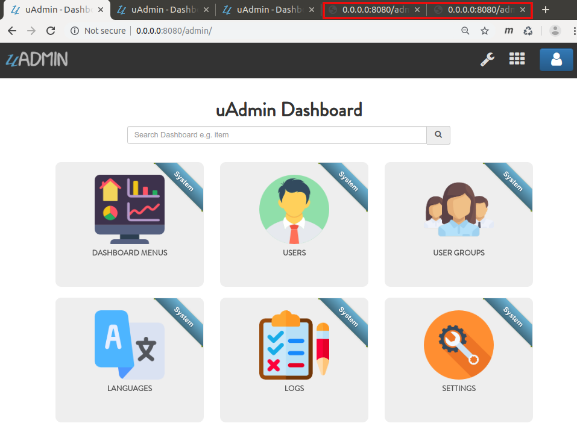The title bar name looks different in the last two tabs. Click any of them to see the result.
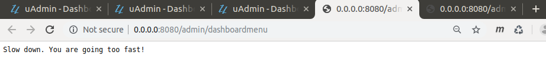The website is crashed as expected. In fact that our rate limit is 1, it might take a long time to bring the website back to normal. To increase the recovery rate, adjust the rate limit to a higher value (e.g. 100) in the Settings.
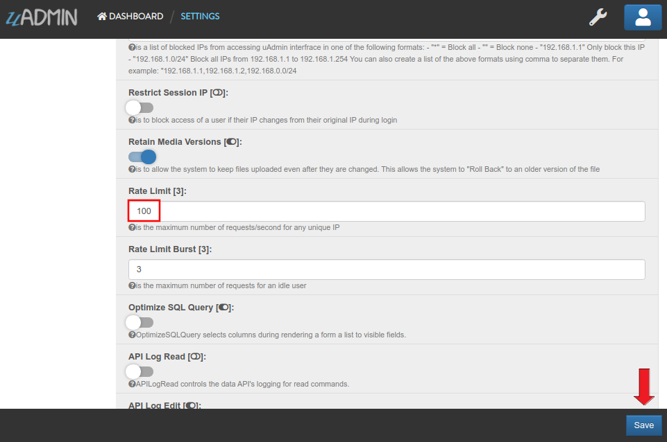Do the same process as shown above. Afterwards, click any button in the form and you will see that the website is back to normal much faster.

Quiz:
Rate Limit Burst¶
Rate Limit Burst is the maximum number of requests for an idle user.
Default Value: 3
Data Type: Integer
Code: uAdmin.RateLimitBurst
Run your application and login your account. From uAdmin dashboard, click the wrench icon located on the top right.
In the Settings, assign the rate limit burst to 3. Click Save button on the bottom right corner afterwards.
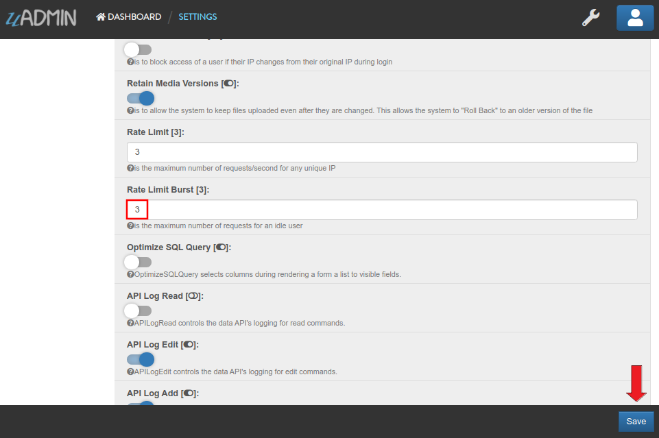Now go back to the uAdmin dashboard.
From here, hold the Ctrl Key on your keyboard then click any dashboard menu in the form really fast to add in a new tab and see what happens.
The title bar name looks different in the last two tabs. Click any of them to see the result.
The website is crashed because our request exceeds the limit that we have assigned.
Quiz:
Report Time Stamp¶
Report Time Stamp set this to true to have a time stamp in your logs.
Default Value: 0
Data Type: Boolean
Code: uAdmin.ReportTimeStamp
Run your application and login your account. From uAdmin dashboard, click the wrench icon located on the top right.
In the Settings, enable the Report Time Stamp then click Save button on the bottom right corner.
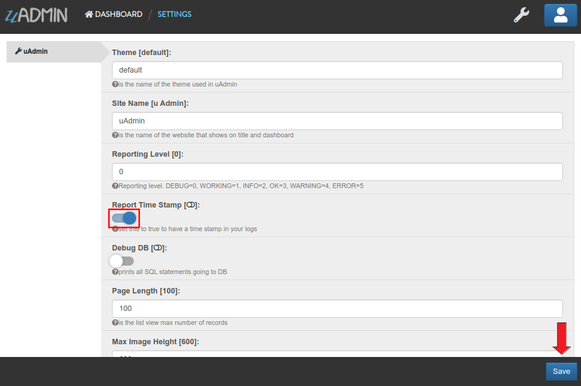Rebuild your application. Check your terminal to see the result.
[ OK ] Initializing DB: [13/13]
[ OK ] Synching System Settings: [46/46]
2018/11/07 08:52:14 [ OK ] Server Started: http://0.0.0.0:8080
___ __ _
__ __/ | ____/ /___ ___ (_)___
/ / / / /| |/ __ / __ __ \/ / __ \
/ /_/ / ___ / /_/ / / / / / / / / / /
\__,_/_/ |_\__,_/_/ /_/ /_/_/_/ /_/
Quiz:
Reporting Level¶
ReportingLevel is the standard reporting level.
There are 6 different levels:
DEBUG = 0
WORKING = 1
INFO = 2
OK = 3
WARNING = 4
ERROR = 5
Default Value: 0
Data Type: Integer
Code: uAdmin.ReportingLevel
Run your application and login your account. From uAdmin dashboard, click the wrench icon located on the top right.
In the Settings, set the Reporting Level to 1 to show that the debugging process is working. Click Save button on the bottom right corner afterwards.

Rebuild your application. Check your terminal to see the result.
[ OK ] Initializing DB: [13/13]
[ OK ] Synching System Settings: [46/46]
[ OK ] Server Started: http://0.0.0.0:8080
___ __ _
__ __/ | ____/ /___ ___ (_)___
/ / / / /| |/ __ / __ __ \/ / __ \
/ /_/ / ___ / /_/ / / / / / / / / / /
\__,_/_/ |_\__,_/_/ /_/ /_/_/_/ /_/
What if I set the value to 5?
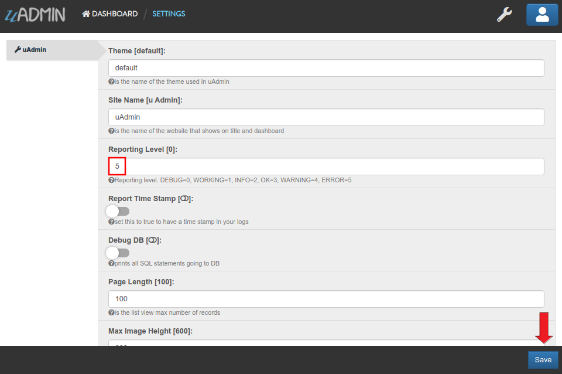Result
[ OK ] Initializing DB: [13/13]
[ OK ] Synching System Settings: [46/46]
___ __ _
__ __/ | ____/ /___ ___ (_)___
/ / / / /| |/ __ / __ __ \/ / __ \
/ /_/ / ___ / /_/ / / / / / / / / / /
\__,_/_/ |_\__,_/_/ /_/ /_/_/_/ /_/
The database was initialized. The server has started. However the error message did not show up because the reporting level is assigned to 5 which is ERROR.
Quiz:
Restrict Session IP¶
Restrict Session IP is to block access of a user if their IP changes from their original IP during login.
Default Value: 0
Data Type: Boolean
Code: uAdmin.RestrictSessionIP
Enable

Disable
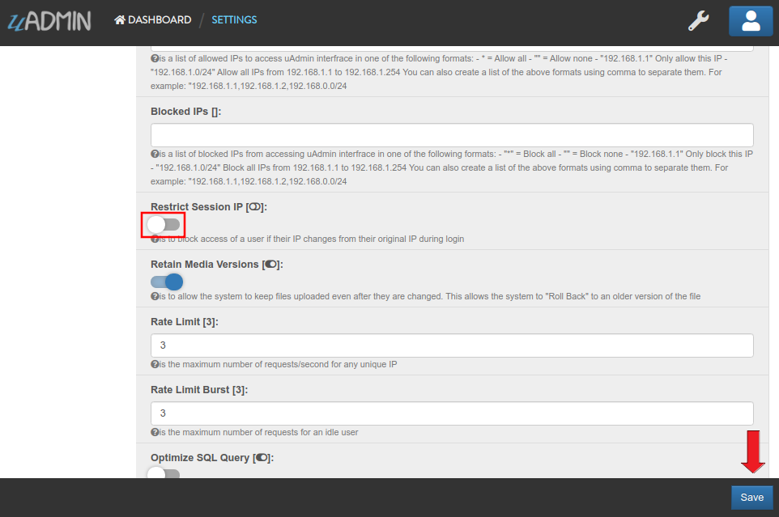Retain Media Versions¶
Retain Media Versions is to allow the system to keep files uploaded even after they are changed. This allows the system to “Roll Back” to an older version of the file.
Default Value: 1
Data Type: Boolean
Run your application and login your account. From uAdmin dashboard, click the wrench icon located on the top right.
In the Settings, disable the Retain Media Versions then click Save button on the bottom right corner.
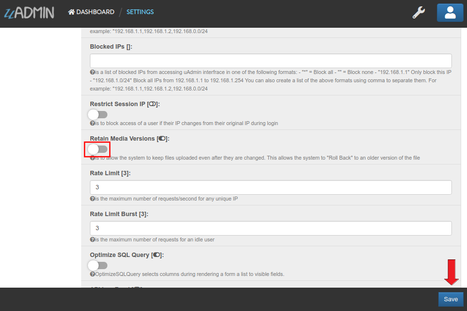Now go back to the uAdmin dashboard.
From here, go to the Category model then click Add New Category button on the top right corner of the screen. Let’s add a new record that includes the uploaded file from your computer (e.g. Windows Installation.pdf).

Result:

From your project folder, go to /media/files/(generated_folder_name)/. As expected, the “Windows Installation.pdf” file was saved on that path.
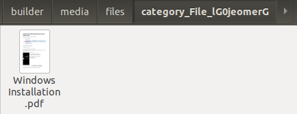Go back to your application and click the existing record that you have (e.g. Installation).
Now update the file on that record (e.g. PDF file to ODT file).

Result:
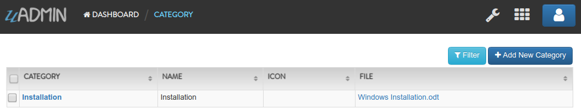From your project folder, go to /media/files/(generated_folder_name)/. As expected, the “Windows Installation.pdf” file was updated from “Windows Installation.pdf” to “Windows Installation.odt” on the same folder.
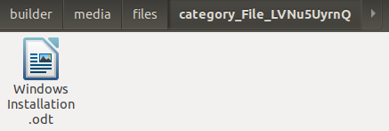Now let’s try enabling the Retain Media Versions in the Settings.

Go back to the uAdmin dashboard then go to the Category model. Update the file of the Installation record back to PDF.
Result:
From your project folder, go to /media/files/ path. Inside it, there are two generated folders that means the old version of the file is kept and the new version was saved in the different folder.

Quiz:
Root URL¶
Root URL is where the listener is mapped to.
Default Value: /
Data Type: String
Code: uAdmin.RootURL
Run your application and login your account. From uAdmin dashboard, click the wrench icon located on the top right.
In the Settings, assign the RootURL value as /admin/. Click Save button on the bottom right corner afterwards.
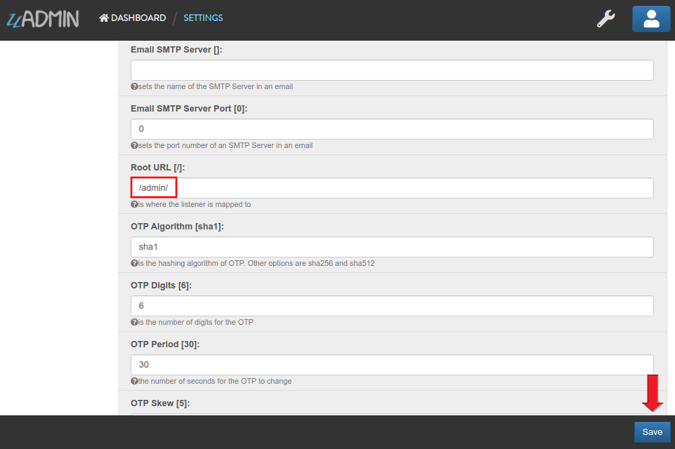Rebuild your application and go to the home page with the RootURL in the address bar to see the result.

Quiz:
Site Name¶
Site Name is the name of the website that shows on title and dashboard.
Default Value: uAdmin
Data Type: String
Code: uAdmin.SiteName
Run your application and login your account. From uAdmin dashboard, click the wrench icon located on the top right.
In the Settings, assign the SiteName value as Todo List. Click Save button on the bottom right corner afterwards.

Now go back to the uAdmin dashboard.
Result
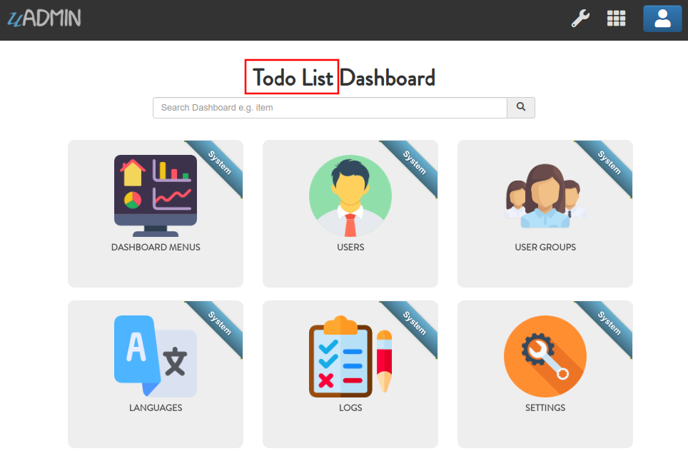Quiz:
System Metrics¶
System Metrics enables uAdmin system metrics to be recorded.
Default Value: 0
Data Type: Boolean
Code: uAdmin.SystemMetrics
Theme¶
Theme is the name of the theme used in uAdmin.
Default Value: default
Data Type: String
Code: uAdmin.Theme
From your project folder, click on “templates”.
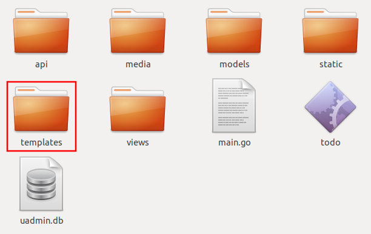Inside templates, click on “uadmin”.

Create a new folder named “custom”.

Inside custom folder, create a new file named “home.html”.

Inside home.html file, apply the following codes below to display a header that shows “Welcome to Home Page”.
<!DOCTYPE html>
<html lang="en">
<head>
<meta charset="UTF-8">
<meta name="viewport" content="width=device-width, initial-scale=1.0">
<meta http-equiv="X-UA-Compatible" content="ie=edge">
<title>Home Page</title>
</head>
<body>
<h1>Welcome to Home Page</h1>
</body>
</html>
Now run your application and login your account. From uAdmin dashboard, click the wrench icon located on the top right.
In the Settings, assigns the theme name as “custom”. “custom” is the name of the folder inside the templates/uadmin path that uAdmin will run when the user starts the server. Click Save button on the bottom right corner afterwards.

Rebuild your application to see the result.

Quiz:
Trail Logging Level¶
Trail Logging Level is the minimum level to be logged into syslog.
Default Value: 2
Data Type: Integer
Code: uAdmin.TrailLoggingLevel
User Metrics¶
User Metrics enables the user metrics to be recorded.
Default Value: 0
Data Type: Boolean
Code: uAdmin.UserMetrics